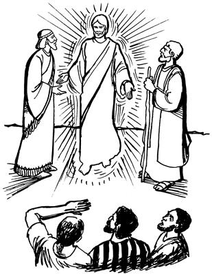

9
1 Seogti, nen tipto yubu lelamogti, “A'un tane wamlom nimiag sikne agha ambarelamsin. A'un tane sekamlom nimi anabiag agha nimi nhon-nhon anam teban komag, Allahri mog so'oag nimi saelbamsilulne lag taleba iplulom. Allahri mog so'oag nimi saelbamsilulne nenena, Eldamneri mikipneag agha lag nembaleba, anam teban komag a'un nimi nhon-nhondi iplulom,” seog.Yesus nong a'eropne tangom agha haing omomne kororo warebaogha
(Matius 17:1-13; Lukas 9:28-36)
2-3 Wene seogpa, ik no'opbare wameka, Yesusti Petrusap Yakobusap Yohanesap enero poa yim wenge nhonag waelbaekti, sin tombare mo wamek. Mo wamekpa, sikin whingag agha Yesus nong a'eropne taogpa, eldi ag wangkamogne haing omomne kororo yame warebaog. Eldi ag kororo warebaogne nenena, nimi mog so'oag nimiri ag a'elbanepne sunsunum wamog komdi, haing omomne kororo warebaog. 4 Kororo warelamogha Yesus wamoghag aneko Allah yubu silimu tiptopnang Musaap Eliap lag tangom agha Yesusap nhon yubu lelamekpa ipsiek. 5-6 Yubu lelameka ipsiekti, Petrusap, Yakobusap, Yohanesap sin wanaag lo'om seekti, logti Petrusti, “Sa'a senep,” sembaog. “Sa'a senep,” aro Yesusag yubu lelamogti, “Nai, amohiropne wamlamne! Nu tane wamapnena wali. Ane sembe ae wilindi soro kaluna kaulbaukap. An sembe nhon, Musa sembe nhon, Elia sembe nhon sobatsukap,” seog.

7 Wene seogpa, toa yaogti lililamsiog pere agha, Allahri imag agha yubu lelamogti, “Anena Na Name, Nari wanaag me wamla. Eldi yubu ka'eamlulom,” alamogha ka'ebaek.
8 Wene seog abeneko pere, kanero kemelamekag agha sin Yesusap lelamek nimi abeneko ipsin koma, ot Yesus mo sinap nhon wameka ibek.
9 Undo unuaogpa, Yesusap elkabo wilindi abenekoap yimag agha kuluklamekti, Yesusti irikto yubu ambarelamsiogti, “A'undi yimag agha wene iplomne sembe nimi nhonag babe ambatsiseng kom. Na mog so'oag nimi tangtopne wamna aghana, amik tebaneri, nimi teptopne anabiag agha nen samoro kamag tanun. Kamag tanun sumeneko tale taneogna, a'undi wene iplomne sembe hae nimi ambatsululom,” seog.
10 Wene seogpa, Yesusti yubu ka'ebaekne sunsunum uro nimi ambatsiek kom. Nimi ambatsiek kom aghana sin mamun hail talamekti, “Sa'a sembe Yesusti, ‘Imag agha mog so'oag nimi tahinge amik nimi teptopne anabiag agha kamag tanun,’ sel?” aro yubu hail talamek.
11 Sikin mamun yubu hail talamekti, Yesusag babe hailamekti, “Sa'a sembe Musari yubu amohiropnangdi ambarelamsiangdi, ‘Elia sam yaleba, Allahri wepto poglenge poneko amik yalul,’ aro ambarelamsiang?” aro haibaek.
12-13 Wene aro haibaekpa, Yesusti ambarelamsiogti, “Elia ponekori sam yingkina, ‘Nia mangkina o'oro wali nembanun,’ aro welingkirop. Ane sik uro ambarelamsiang. Aghana nari a'unag ambarelamsinne, Elia poneko sik uro yaogpa, nimiri el sembe karongdi, ‘Malia uaukap,’ senenne sunsunum uro ni uaong. Sikindi elag malia uaongne sembe anam uro yabin komag Allahri sam el wamogti, Eldi yubu mome toro pairopnangag ambatsiogha sunsunum uro mome toro pibeka wamla. Aghana tamna undo. Sindi Allah yubu tipto samenag mome toro pibek nangdi, ‘Imag agha mog so'oag nimi talenge ponekona, nimiri wa'eplamikpa, seklebalul,’ aro mome toro pibek. Wali uro seneraglapmundi, ‘Sa'a sembe mome ane toro pibek?’ aro seneraglamlulom,” seog.
Yesusti phia yonge me kulomag agha yag lambaogha
(Matius 17:14-21; Lukas 9:37-43)
14 Wene seogpa, Yesusap elkabo wilindi abenekoap nen samoro yimag agha kulukul alamekti, eldi yubu ka'ero neleptopnang yogne wamekag yaek. Yalamekti, kemelamsiekpa, nimi maikno longolaeka nusamag Musari mome toro pibog yubu ambatsiropnang etpareri Yesusti yubu ka'ero neleptopnang yogne aneko toraptangto lel talamekpa, ipsiek. 15 Ipsiekti yalamekpa, nimi longkamek nimi tanekori Yesus tibogaekti, “El yalamla,” aro awi maikno senelamekneag agha merero utol piek. 16 Utol piekpa, Yesusti sinag hailamsiogti, “Sa'a sembe tam nenero yubu lel talamlom?” aro haibahiog.
17 Wene aro haibahiogpa, nimi longolaekne anabiag agha nimi nhondi samoro ambarelamogti, “Nai, amohiropne wamlam. Nari me anag poa yanne, ‘Wali nembalulam,’ aro payan. Phia yonge el kulomag wa'iogti, yubu kom nembaog. 18 Phia yonge nenekori elag ulamlange, yamoro eplamlari, so'oag oro manalamla. Manalamlaba, me eneko si kelengtepto si ka'en toman kamola makel alamlari, nong ni kikiplamla. Ane sembe, payandi andi yubu ka'ero neleptopnangag ‘Wali nembatnululom,’ aro molbahin aghana, sumbangba eraruk tina, wali nembanep kom saog wamla,” aro Yesusag ambarog.
19 Wene aro ambarogpa, Yesusti sinag yubu lelamogti, “Eh, a'un nanag sik semban koma yaroglamlom nimi. Na ko'o ik etbare a'un anabiag wamneri, ‘Nanag sik senelamseng,’ aro wana palingkina wamnep? Me eneko nanag payahut,” seog. 20 Seogpa, me aneko Yesusag payaek. Payaekpa, phia yonge aneko Yesus ililamog abeneko pere, me anekoag uloghognena, konkonoro so'oag mambirogpa, so'oag pemagto lologlamogti, si ka'en toman kamola makel alamog. 21-22 Si ka'en toman makel alamogpa, Yesusti iliag hailamogti, “Etsuma phia yonge el kulomag wa'iori ulamla,” aro haibaog.
Haibaogpa, ili ponekori samoro ambarelamogti, “El olog wamoghag agha wa'iogti, phia yonge nenekori ‘Omnun,’ aro ik nhon-nhon aukag wepto talamlori, ik nhon-nhon babe maghag wepto talamlo. Nu sembe yareag sembahisomdi, yepsisom. Andi el wali nembanep to, kom to?” aro Yesusag molbaog.
23 Wene aro molbaogpa, Yesusti samoro ambarelamogti, “Sa'a sembe andi nanag, ‘Yepsinep to, kom to,’ aro haibanelam? Andi nanag seneragto, ‘Allah mikipneri el pere agha sik uro ulamla,’ aro nanag seneraglamnemen tanena, andi sa'a-sa'a nanag molbanemenne sunsunum uro uro yabinep,” seog.
24 Yesusti wene seog abeneko pere, me eneko ili ponekori yubu haum aro lelamogti, “Nari anag sik semban aghana, wana phende taneleagti, yepnemen andarina nari nubu uro anag ‘Sikne’ aro seneraglamnun,” seog.
25 Seogpa, Yesusti kemelamsiogpa, nimi maikno merero longol aek. Merero longolameka kembamsiogti, Yesusti phia yonge nenekoag aruklamogti, “An phiari me aneag pam lepto ao leplamlamne, nari anag ‘Lambae!’ aro yaglangken. Me eneag agha lambamendi, nen samoro wa'al alulam kom,” seog.
26 Wene “Lambae” seogpa, phia yonge me eneko kulomag wamogha haum aro lanalamogti, me eneko nong lolog murulamog pere agha lambaog. Lambaogpa, me eneko tebalo nimi saog uaogpa, nimi maikno tanekori, “Ya'ag loba tal,” alamek. 27 “Loba tal,” alamek aghana, Yesusti me eneko sae salero toro sekirogpa, me aneko sekog.
28 Me eneko wali taogti sekogpa, Yesus eldi yubu ka'ero neleptopnangap ae lomag wa'ina, mo wamek. Sin Yesusap nhon mo wamekti, elag hailamekti, “Sa'a sembe nuri phia me eneko kulomag ua ulamogne neneko nuri yag lambanep kom?” aro haibaek.
29 Wene aro haibaekpa, Yesusti samoro ambarelamsiogti, “Phia yonge nene saogne yag lambahinepnena, mo yubuag agha, ‘Lambae,’ arop tanena, yaglambanep kom. Ot Nuni Allahag molona mololapmunba, Allahri ka'ebom agha wali sele taneogna, El mikipne pere agha yag lambahinep,” seog.
Yesusti, “Ya'ag omnukang,” aro eldi yubu ka'ero neleptopnangag nen sarikto ambatsiogha
(Matius 17:22-23; Lukas 9:43-45)
30-31 Seogti, Yesusap eldi yubu ka'ero neleptopnangap mog so'o aneko laplobi agha mog so'o Galilea phiro piek. Palamekti Yesusti senelamogti, “Nari yubu ka'ero neleptopnangap mo wameberi, ot sin aghabog el nenero ambarelamsinun. Ane sembe nu tane wamapne sembe nimiri el taikag,” aro lag palamek kom. Yesusti eldi yubu ka'ero neleptopnang ambarelamsiogti, “Na mog so'oag nimi tahinge aghana, nimi nhondi na aisanang saeag nenero pankhebanelul. Pankhebaneleba ya'ag omneikpa, tebanea ik wilindi wamneri, nen samoro kamag tanun,” aro ambatsiog.
32 Yesusti wene aro ambatsiogpa, yubu neneko sindi wali uro seneraghek kom aghana logti, elag haibaek kom.
Yesusti “Nimi etneri umag neneptangto nimi ni yepsile tanena, Allah whingag nubu tanep,” aro ambatsiogha
(Matius 18:1-5; Lukas 9:46-48)
33 Sin mog so'o Galilea palamekti, as Kapernaum yaek. Yaekti, aeag wa'iekti, Yesusti eldi yubu ka'ero neleptopnangag hailamsiogti, “Usa inaag yalamap abeneko tam huropne sembe yubu leple yalamlom?” aro haibahiog.
34 Wene aro haibahiogpa, samoro yubu lebek kom. Elag samoro ambarek komnena, inaag yalamekti, sin mamun “Nun anabiag agha etne agha nubunge?” aro yubu lep tang-tang yalamek. Ane sembe aliri, yubu lebek kom. 35 Ambarek komba, Yesus pukogti, eldi yubu ka'ero neleptopnang aobare aneko yopsiog. Yopsiogti, yubu ambarelamsiogti, “Nimi etneri, ‘Na Allah whingag nubunge tanun,’ senelamle tanena, nimi enekori, ‘Whingagne tanun,’ seneropne laipsileba, wana mamleba, nimi ni yeplamsile taneogna, Allah whingag nubu tanep,” seog.
36 Wene seogti me ologne nhon tobogti, sin nusamag sekirogti, somoro saelbamog. Somoro saelbamogti, yubu lelamogti, 37 “Me ologne nene saog nimi nhon wamleba, nimi etneri nari siag kekhaekto nembaleri, ‘Yesus kiploa saog uro kimnun,’ aro toro kipto piple tanena, nimi enekori na babe toro kipto pimneloa saog ulamlul. Na toro kipnelul nimi eneko na mo kiplul kom aghana, na kipnelenge pere agha na pogneogne poneko, Nani Allah babe kiplul,” seog.
Yesusti, “Nimi etneri nu aisa nembamsil kom tanena, nimi aneko nungkae wamla,” seogha
38 Wene seogpa, Yohanesti Yesusag yubu lelamogti, “Nai, amohiropne wamlam! Nuri kemelamoboba, nunap nhon yabalamap kom nimiri an si lero phia yonge yaglamsioba ibobo. Ibobo aghana, nimi aneko nuri anag neleplangkeap saog uro anag sop nelepto yabalamla kom. Ane sembe, ‘Yesus si lero phia yaglambahiseng kom,’ aro irikabo,” seog.
39-40 Wene seog aghana Yesusti, “Nimi nhondi na si lero nanag sikne aro seneraglamlangeag agha kekneba ulamleri, ‘Allahri mikipne el pere agha ulamla,’ senenne kekneba wene uale tanena, nimi enekori na san tilibanep kom. Ane sembe nanag seneragto na si lero kekneba ulamle nimi irikahiseng kom. Nimi etneri nu aisa nembahile kom tanena, nimi eneko nungkae wamlari, na san tilibanelul kom. 41 Tam nene sembe sikne agha lemnuan. Nimi etneri a'un sembe, ‘Allahri wepto poghogne Kristus poneko ma'aptangtop nimi wamlombana, a'un yepsisene,’ sembaleri, a'un yepto mag babe tebarelamsile tanena, Allahri nimi eneko sembe ekon tan koma kamna tatlul,” seog.
“Malia uaukang,” aro nimiri wana alukto suknubahinepne sembe Yesusti ambatsiogha
(Matius 18:6-9; Lukas 17:1-2)
42 Wene seogti, Yesusti sunumna yubu etpare nen lelamogti, “A'undi usa ‘Etne nubunge,’ aro leptalom aghana, sin olog nimi agha nanag sikne aro wana palilamneang nena wali. Wali aghana, olog nimiri nanag wana paliro nelebanep ina toman nimi nhondi sindi wana toro, ‘Wail ibarukang,’ aro punpun tiptoba pipleba, puri tikto phukul ingkiik tanena, punpun tiptoba piple nimi enekoag Imagneri tam ikinne piplul. Punpun tiptoba piple nimi eneko ngangag kirik ikinne kerekto mag longorop mag nubunge lautag talobol pinepne ane olog keyagman saog. Imagneri nimi enekoag ikinne piplulne aghabog ikin sirik. 43-44 A'un nimi nhondi sae tarari uanepne sembe, malingeag phukul ingilapmen tanena, ‘Malia uaneag,’ aro sae aneko karepto tobogloplulam. Sae ni phende wali wamnep aghana, mali-malia ulapmenne sembe ebek sop-sop mahan ektobag auk nubunge sarangtop komag an wa'iro wapmen tanena, wali senep kom. Sae tara karepto toboghahom andarina, mali-malia uan koma ya'ag kamag uro wamnepne wa'isom, taneogna wali. 45-46 A'un nimi nhondi yan tarari uro pinepne sembe, malingeag phukul ingilapmen tanena, ‘Malia uaneag,’ aro yan aneko karepto tobogloplulam. Ni yan mamun wali wamnep aghana, mali-malia ulapmenne sembe ebek sop-sop mahan ektobag auk nubunge sarangtop komag an toboglopkelenge wali senep kom. Yan tara karepto toboghahom andarina, mali-malia uan koma ya'ag kamag uro wamnepne wa'isom, taneogna wali. 47-48 Haing tarari kemelapmenne agha, malingeag phukul ingilapmen tanena, ‘Mali-malia uaneag,’ aro haing aneko kwhero tobogloplulam. Haing ni phende wali wamnep aghana, mali-malia ulapmenne sembe an a'uk nubungeag nimi teptoba urobag toboglopkeleba, ebek teban komag sop-sop mahan ektobag auk nubunge sarangtop komag ya'ag wapmun tanena, wali senep kom. Ot haing wana nhonog wamnep andarina, Allahri wali saelba uhiropne poneko umag ya'ag kamag urobag wa'ina wamsom, taneogna wali.
49 Nimiri garam yamolamloa saogne nimi niag auk kulukulalul.a
50 Garam nenena sao wali aghana, emem arop kom tale tanena nimiri nen samoro garam sao wali nembanep komdi, teba'en sembanep. Ane saog uro, a'un mamun ma'aptangto wapmunneag agha garam sao walinge yamolamloa saog ulapmundi, waptan koma wali wamlulom,” seog.